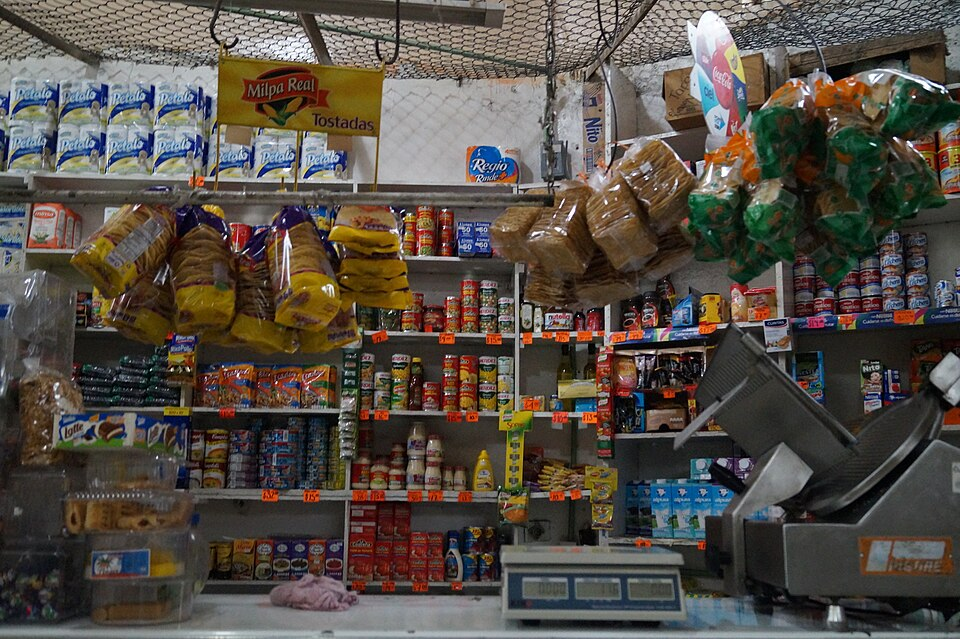

Actividad 15 · Líder visionario
Economista mexicana, fundadora de Financiera Sustentable. Vio un negocio y una injusticia en el mismo lugar: millones de pequeños negocios sin acceso a crédito.

En México, la mayoría de las micro y pequeñas empresas (la tiendita, el taller, la cocina económica) no consiguen un préstamo bancario: no tienen historial ni garantías. Armendáriz apostó a que prestarles era posible y rentable si se les conocía de cerca y se les acompañaba, y fundó Financiera Sustentable para hacer exactamente eso.
Sabe a quién quiere servir y por qué: el pequeño negocio que mueve la economía real.
Sostuvo su idea cuando la banca tradicional la consideraba demasiado riesgosa.
Demuestra que el impacto social y el negocio no están peleados.
Llevó el tema de la inclusión financiera a la televisión y después al Congreso, como diputada federal.
Tener claridad y convicción sobre a dónde se dirige.
La visión no es adivinar el futuro: es saber hacia dónde vas y sostenerlo cuando otros dudan. En Armendáriz las dos cosas se ven juntas: tuvo claro a quién quería servir y no se movió de ahí aunque los bancos pensaran que estaba equivocada.